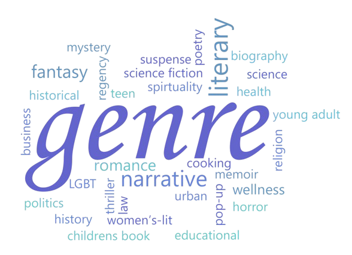

| Genre | Description |
|---|---|
| Action | An action story is similar to adventure, and the protagonist usually takes a risky turn, which leads to desperate situations (including explosions, fight scenes, daring escapes, etc.). Action and adventure are usually categorized together (sometimes even as "action-adventure") because they have much in common, and many stories fall under both genres simultaneously (for instance, the James Bond series can be classified as both). |
| Adventure | An adventure story is about a protagonist who journeys to epic or distant places to accomplish something. It can have many other genre elements included within it, because it is a very open genre. The protagonist has a mission and faces obstacles to get to their destination. Also, adventure stories usually include unknown settings and characters with prized properties or features. |
| Comedy | Comedy is a story that tells about a series of funny, or comical events, intended to make the audience laugh. It is a very open genre, and thus crosses over with many other genres on a frequent basis. |
| Crime and mystery | A crime story is often about a crime that is being committed or was committed, but can also be an account of a criminal's life. A mystery story follows an investigator as they attempt to solve a puzzle (often a crime). The details and clues are presented as the story continues and the protagonist discovers them and by the end of the story the mystery is solved. For example, in the case of a crime mystery, the perpetrator and motive behind the crime are revealed and the perpetrator is brought to justice. Mystery novels are often written in series, which facilitates a more in-depth development of the primary investigator. |
| Death Game | The death game genre is a race where participants compete against each other for their lives in a series of escalating challenges until the fittest survivor(s) are left.[4] The genre has been widely popularized in films such as The Hunger Games (2008), Saw (2004) and Battle Royale (2000); TV series such as The Squid Game (2021), Alice in Borderland (2020) and Mirai Nikki (2012), reality TV shows such as Physical 100 (2023) and Survivor (1992), video games such as Danganronpa (2010) and literature such as Lord of the Flies (1954). The death game genre is a metaphor for the value ascribed to human life against the power dynamics in-play throughout human civilization. |
| Fantasy | A fantasy story is about magic or supernatural forces, as opposed to technology as seen in science fiction. Depending on the extent of these other elements, the story may or may not be considered to be a "hybrid genre" series; for instance, even though the Harry Potter series canon includes the requirement of a particular gene to be a wizard, it is referred to only as a fantasy series. |
| Historical | A story about a real person or event. There are also some fiction works that purport to be the "memoirs" of fictional characters as well, done in a similar style, however, these are in a separate genre. Often, they are written in a text book format, which may or may not focus on solely that. |
| Horror | A horror story is told to deliberately scare or frighten the audience, through suspense, violence or shock. H. P. Lovecraft distinguishes two primary varieties in the "Introduction" to Supernatural Horror in Literature: 1) Physical Fear or the "mundanely gruesome;" and 2) the true Supernatural Horror story or the "Weird Tale". The supernatural variety is occasionally called "dark fantasy", since the laws of nature must be violated in some way, thus qualifying the story as "fantastic". |
| Romance | The term romance has multiple meanings; for example, historical romances like those of Walter Scott would use the term to mean "a fictitious narrative in prose or verse; the interest of which turns upon marvellous and uncommon incidents". Most often, however, a romance is understood to be "love stories", emotion-driven stories that are primarily focused on the relationship between the main characters of the story. Beyond the focus on the relationship, the biggest defining characteristic of the romance genre is that a happy ending is always guaranteed, perhaps marriage and living "happily ever after", or simply that the reader sees hope for the future of the romantic relationship. |
| Satire | In satire, human or individual vices, follies, abuses, or shortcomings are held up to censure by means of ridicule, derision, burlesque, irony, or other methods, ideally with the intent to bring about improvement. |
| Science Fiction | Science fiction (once known as scientific romance) is similar to fantasy, except stories in this genre use scientific understanding to explain the universe that it takes place in. It generally includes or is centered on the presumed effects or ramifications of computers or machines; travel through space, time or alternate universes; alien life-forms; genetic engineering; or other such things. The science or technology used may or may not be very thoroughly elaborated on. |
| Speculative | Speculative fiction speculates about worlds that are unlike the real world in various important ways. In these contexts, it generally overlaps one or more of the following: science fiction, fantasy fiction, horror fiction, supernatural fiction, superhero fiction, utopian and dystopian fiction, apocalyptic and post-apocalyptic fiction, and alternate history. |
| Thriller | A thriller is a story that is usually a mix of fear and excitement. It has traits from the suspense genre and often from the action, adventure or mystery genres, but the level of terror makes it borderline horror fiction at times as well. It generally has a dark or serious theme, which also makes it similar to drama. |
| Isekai | Isekai (Japanese: 異世界, transl. "different world" or "otherworld") is a Japanese genre of speculative fiction—both portal fantasy and science fiction are included. It includes novels, light novels, films, manga, anime and video games that revolve around a displaced person or people who are transported to and have to survive in another world, such as a fantasy world, virtual world, or parallel universe. Isekai is one of the most popular genres of anime, and Isekai stories share many common tropes – for example, a powerful protagonist who is able to beat most people in the other world by fighting. This plot device typically allows the audience to learn about the new world at the same pace as the protagonist over the course of their quest or lifetime. |